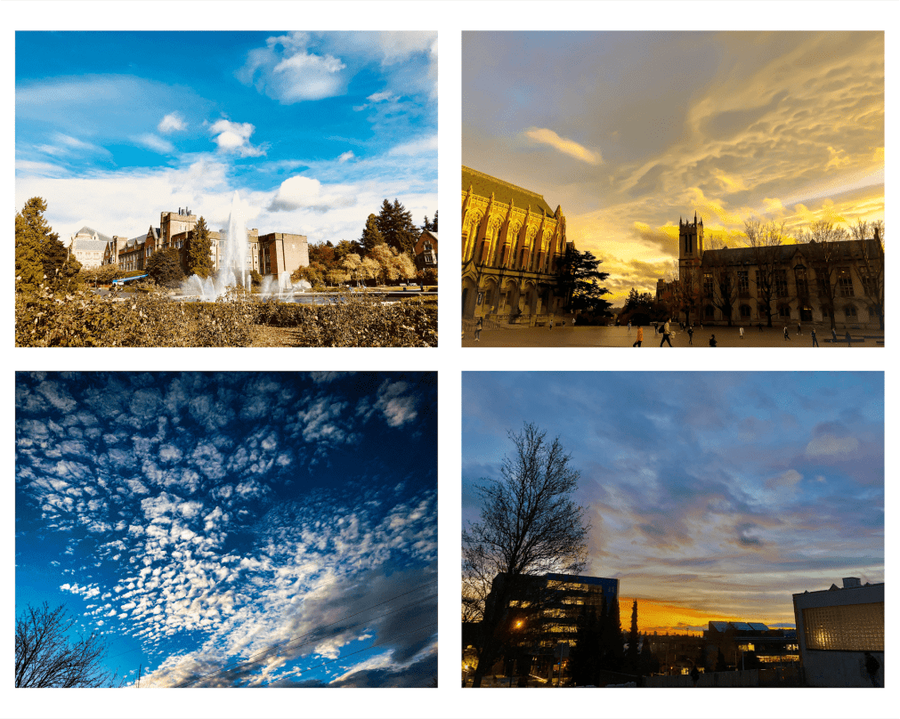

I discovered my love of Art History when I was a Freshman in college. I had to take an elective because I needed the credit, and the course that seemed to be a match was an Art History class.
I registered for it and thought I wouldn't like it. However, after taking it, I found it fascinating. Art History made me realize that every detail the world has some form of meaning behind it and should be appreciated.

Edward Hopper, Nighthawks, 1942. Oil on Canvas. 33.1 in x 60.0 in. Art Institute of Chicago
Nighthawks has got to be my all time favorite painting! Nighthawks resonates with me because it depicts America in a time of uncertainty and anxiety, two common feelings in this day and age.
The lack of physical contact with the people in the bar reinforces these feelings. The woman in red and the man sitting next to her may look like they are touching but are not. We know this because they mirror the two beer kegs, close but not touching.
I specialize in cloud photography because of its natural beauty. Clouds come in various shapes and sizes. When sunlight hits at the right angles, clouds may take on a spectrum of colors between red and yellow. It's amazing to behold.
Follow me on Instagram @casual_picture_taker for more clouds!
Songs from the '70s and '80s appeal to me because it is a time that I did not live in. Listening to songs from that era makes me wonder what it would have been like back then. Here are some of my favorites (in no particular order)!